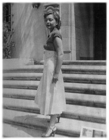

The Bare-Faced Messiah Interviews
Interviews with "Barbara Kaye",
Los Angeles, 28 July & 21 August 1986
"Barbara Kaye" (a pseudonym) was a pretty blonde 20-year-old in 1950 when she became L. Ron Hubbard's PR assistant and, before long, his lover. For the next year she was in a unique position to see the changes in Hubbard during his meteoric rise and fall from 1950-51. In 1986, she was interviewed by the British writer and journalist Russell Miller for his biography of Hubbard, Bare-Faced Messiah. The following is a transcript of the two interviews conducted by Miller. Her reminiscences give a fascinating insight into Hubbard's mental state at the time. A number of people are mentioned in the transcript - here are the dramatis personae:

I was trying to get into PR and was sent by a employment agency to Dianetics and [Ron] was looking for a PR assistant - someone primarily to answer the scurrilous attacks the press was making on Dianetics. I was hired. He was in the big old governor's mansion at Adams and Hoover - it used to be the governor of California's mansion.
This was during the peak of his success with Dianetics in 1950. This all took place in 1950-51. I started doing a lot of administrative things, arranging things. We had lots of conversations, he'd ask me for advice about this and that. Sometimes I worked late and he took me home - I was living with my parents at the time - and one thing led to another.
I was also hiring people, I hired a secretary for him.
He interviewed me for the job. I had read about him, had read about Dianetics. At that time I had been through university with a major in psychology - he bounced ideas off me because he had no background whatsoever in psychology. He told me that before he wrote Dianetics, because he had no background in psychology, he went to the University of Chicago library and asked for the latest book on psychology and read this book - that was the only thing he had ever read on the subject.
My impression was of a very creative, intelligent articulate individual. He was husky, red-haired, with a full flabby face, not by any means what one would call a handsome man. If I'd seen him on the street I would not have given him a second look, but he was very dynamic, had a marvelous personality and was quite magical.
Most of my time was spent answering [press attacks] - he had a clippings service and every time Dianetics was mentioned I would write to the reporter and reply and defend it. I was writing to columnists and magazines all the time. No one had anything good to say about it.
There was a lot going on at the office. He was having a lot of political and organisational problems with people grabbing for power. he didn't trust people and there were a lot of problems with people in the east, he mentioned names like Art Ceppos [publisher of Dianetics: The Modern Science of Mental Health]. He felt people were trying to do him in all the time and get power.
There was a time later when for some reason or another he had no access to his money and I paid out of my own pocket for an ad for the training course in the paper when things were slowing down. I paid out of my own money. He was very depressed. He was broke. I don't know why he couldn't get to his money. He should have had millions from the royalties but it was all poured into the Foundation.
It was busy in the office but not hectic. He was not really a harried executive, everything was smooth. He had a lot of personal problems with his wife. What he told me and what the facts were I don't know. I can only report what he told me. He told me at one time....
I was very young at the time and was not as concerned with other peoples wives. I just didn't think about it. On a New Years Eve he spent with me he was supposed to have been at a party with his wife and he didn't go home and he said she made a suicide attempt. Then there was the kidnapping of Alexis [Hubbard] and so on.
After he took Alexis ...
I knew Miles [Hollister] very well, it was really surprising to me when he later took up with Sara.
I lost track of Ron when everything went into a shambles and there was this bad publicity in newspaper about Alexis when he took off. He had gone home and found Miles in bed with his wife and that's when he took Alexis; he thought he was perfectly justified to do this. He said they were going to try and put him into a mental institution, he was afraid they were going to commit him.
When he took off I only knew what I read in the newspaper. The next time I heard from him was Wichita when he was living with this oil baron [Don Purcell]. He started writing me and wanted me to come there. I went there and he was like Howard Hughes' last days, really in a bad depression. His fingernails were long and curved, his hair was stringy. He met at the hotel and was in such bad shape, he was trembling, like someone who should be in a mental institution. I knew then... he wanted me to marry him, he'd bought me a ring but I knew then he was such a deeply disturbed man it could never be and I left the very next day.
Then I was out of contact with him until recently. I was feeling a little guilty about giving stuff to Jerry and papers were speculating whether he was dead or alive. I wrote a lot of poetry under the influence of my infatuation with Ron. I was very deeply involved with him, he was a fascinating man. I knew he was ill and old, and I thought it would be a nice gesture to send him the poems, so I sent him a letter with the poetry. I got a very nice sweet letter back from him. This was about 3 years ago [1983]. I told him I'd been interviewed by Omar Garrison.
The affair began when he took me home from the office one night and kissed me goodnight in the car. That's how it all started. Took me some time to realise he was disturbed. He was highly paranoid and would be rushing along the street with me and I would say, "Why are you walking so fast?" He'd look over his shoulder and say, "Don't you know what it's like to be a target?"
At all times he thought the American Psychological Association and the AMA and CIA had hit men after him... he thought everyone was after him. This was long before the IRS was after him. No one was after him at that time, but he certainly had delusions.
When I went to work for him he had hired somebody who had been in the police department. He gave everyone who worked for him a lie detector test asking if he had designs on his life. I had to take it. The man who was giving the test always had a little bit of fun and asked the women - the last question was, "Are you a virgin?"
The first time I made a clinical diagnosis of Ron was when I was with him in there. He had a house on Mel Avenue. He asked me to come there and he was in a deep depression. There was no doubt in my mind he was a manic depressive with paranoid tendencies. Many manics are delightful, apparently productive, they do all kinds of marvelous things and have tremendous self confidence and talk and talk and talk, really hyper. He was like that in his manic stage - he was enormously productive and creative, he had big feelings of omnipotence, he talked all the time of grandiose schemes. It was extremely interesting in his case because he made his fantasies come true.
He said he always wanted to found a religion like Moses or Jesus.
I went to Palm Springs - he was very lethargic. He had a publisher's deadline and he couldn't work on the book, he was really blocked. That's why he called me; he was hoping I could help him get out of writer's block. He was lying down feeling sorry for himself, drinking a great deal. He drank a great deal but held his liquor well. I never saw him drunk in the sense of being out of control. He was very sad and lethargic. Sometimes he'd go to the piano and fiddle around and improvise. He had a weak, sad voice, a sad face.
At that time, acting intuitively, I used a technique to give him a little step at a time, break down problems into small parts, so I had some butcher paper and said, "Look, you don't have to write, all you have to do is sit down at this table, look at the paper, when you don't want to do it any more get up and leave." He sat there for 10 minutes for the first day, this went on for several days and one day he picked up the pencil and began to write. That was the beginning of Scientology.
I had been reading Freud since I was 12 and he would bounce ideas off me in kitchen, we'd talk until 3 in the morning. He got very excited and enthused about what he was doing, very enthusiastic again and began working. This was before the Alexis incident.
In LA he lived in Western Ave area around Wilton. I found the house for him on N Curzon for him and his wife and baby.
I don't know where he was living when I first started working for him. He didn't talk about Sara at all, I don't know what was happening with the marriage. I spent a weekend with him in some motel at Malibu and on the way back in to LA he stopped to buy a bouquet of flowers for his wife. He said she had said to him, because he was feeling down in the dumps, "Why don't you go and spend the weekend with a pretty girl?"
He told me how he met Sara - I never knew what to believe. He said he went to a party and got drunk and when he woke up in the morning he found Sara was in bed with him.
I accompanied him on a lecture tour in San Francisco and we were at the home of an attorney doing some legal work for Ron, and someone's wife at the party enticed him into the kitchen, and I came upon them in the kitchen in an embrace. He was a womaniser. every attractive woman was fair game to him.
Some of things he told me were really bizarre, I didn't believe half of them. I believe the engrams he was running were 90% fantasy. He told me his mother was a lesbian and he had found her in bed with another woman, that he was an attempted abortion - he was running all these engrams but I attributed them to his paranoia.
I didn't think he had ever done much research except for reading this book on psychology. He read a German journal in which an engram was mentioned in 1916-17, he knew that someone had written about an engram. Joseph Wolpie came up with idea that repetition was an effective way of reducing tension on heavily charged incident. Desensitisation was what Ron was doing in Dianetics without knowing he was doing it. I think he stumbled across the material by accident and intuition.
He wasn't widely read - he made no bones about it. He had a wild imagination, he was tremendously creative person.
My feeling was that he got a medical discharge from the Navy and I think it was because they knew he was crazy. I think they tried to give him electric shock in the hospital because he had very strong feelings against that treatment and I felt it had a personal reference. He must have been recognised at one time as a disturbed individual.
I think he probably made up a lot of the case histories in the first Dianetics book. He was not academic and never did any research.
I was very infatuated with him and I said to my room mate - we had an apartment in Beverly Hills - "If I ever tell you I am marrying this guy, I want you to tie me up and not let me out the door, because he's a lunatic." But I didn't trust myself, because I was so enchanted by him I felt I would go ahead and do it. He was very magical, delightful fascinating man. He talked all the time and was interesting, a great raconteur, very bright, amusing and dynamic.
He dominated at parties - everyone would listen to him, he loved to be the centre of attention.
I was going with him and one morning I get a telegram saying I was fired and, "I suggest you leave the organisation". I was in shock, here was this man I was having a great love affair with and then I was fired.
Much later he explained and said that I had called his home asking for him and he got the impression from Sara that I had told her about our affair. Of course I never had. That's why he sent the telegram.
One night, in the midst of our affair we double dated, Ron and Sara and Miles and me. Sara must have known what was going on. She was very hostile to me. We were talking about guns and she said to me that I was the type to use a Saturday night special. We had dinner together.
I met Miles at the Foundation. After I broke up with Ron I had an apartment of my own in Beverly Hills on Dale.. Drive. That's where Ron spent New Year's Eve one night. I was only 20 years old. I had a thing going with Miles - he was very good looking, a very handsome boy.
He was psychotic, a manic depressive with paranoid tendencies.
When I was in Wichita I don't think Mary Sue [Whipp] was around. I think he must have become involved with her after I left. Ron put me up at a hotel because Don Purcell opposed me coming out. He didn't like me. Ron told me he had to keep me coming to Wichita secret, he got $50 from Purcell to pay for my hotel room. I think I only spent one night there - I was frightened of this man.
He had asked me in a telegram to marry him. He asked me to come to Wichita and offer me nothing less honourable than marriage. He bought me a ring in Wichita.
I was shocked by his appearance in Wichita. He had visibly deteriorated, both physically and emotionally. He was extremely unkempt, he lived like a street person. He was extremely depressed, talked in a monotone, always on the verge of tears. I never went out of the hotel except when he took me to a jewellery store to buy a ring.
I told him I was leaving - said I felt there was nothing I could do for him and I didn't want to come between him and his patron Purcell, told him I was going. I felt extremely distanced from him because he was so strange; he was like a different person.
Mostly when we were together he talked and I listened. He talked about Polly, said she was a screen writer in Hollywood, liked horses. All the time I was going with him he never once mentioned he had children by Polly. I never knew he had a son until I read it in the newspapers. He talked about his grandfather who could really hold his liquor, who had a fiddle with the head of a negro carved on the end. He didn't talk about family with any affection. He never talked about his father.
He was a character, it was like watching a fascinating character on stage playing a role. I was never bored when I was with him. He was a colourful personality and acted out all the unusual things that were in his mind, that's what made him so fascinating. People who are manic have this enormous energy - it fueled talking and thoughts. He was charismatic, communicated an energy.
When he went off with Alexis he came by the mansion at Hoover. I was there working and he was in a depression. I could see the way he walked - his head down, dragging his feet.
I hired a secretary for him but he didn't want her around and he wanted me to fire her. She said she had just bought a cage bird on strength of her first salary and I felt really bad. I told Ron and he was quiet and said, "If I had known I would have paid her for the bird."
I had a mustard coloured jacket and he forbade me to wear it. He hated it, couldn't stand the colour, it reminded him of something to do with the service. It was the colour that disturbed him. He said, "I'm paying you a very good salary - I think you can afford to throw away that jacket."
Notes from Barbara's journal:
Sept 12. 1950: "Mrs Hubbard arrived in town today unexpectedly and moved into our apartment with the baby. I keep thinking of Ron's and my first night together and how he puts his hands on my shoulders and led me into the bedroom and, opening a door, uttered softly, "This is your closet", and steered me to the vanity unit, "This is your dressing table", then to the bathroom, "This is your toothbrush"."
Then after hearing of Mrs H's arrival the inconspicuous but decisive arrival on my desk at the Foundation of my perfume replaced in its blue velvet box and my toothbrush carefully snapped into its plastic case. Even in the office while she was there at the Foundation he came to my desk and whispered, "I miss you." He called her Bitchy and looks at her like a little boy who has been in the cookie jar. He actually had the audacity to invite me to dinner with them. He kept barbing her.
Sept 18: "Not a word from him all weekend. Coolness in the office, almost rudeness." Hired $40 a week receptionist - she bought cage for parakeet on basis of first pay cheque, then Ron didn't want her and had her fired.
Oct 15: Train to San Francisco on 20 Sept for a speaking engagement. He had sent an advance man up. There was a ruddy faced guy hired as an advance man to set up arrangements for a lecture in SF. "Wife kissed him at the station. At first mutually ill at ease and strained. He was drinking a lot in the club car." In SF he went to a barbecue party at attorney's; his wife made a pass at Ron in the kitchen and he reciprocated. We had separate rooms - he wanted her to come down, she refused, and his response was sudden and violent, very paranoid. He lost his temper. He said, "They're all against me."
"I see him now as vain, arrogant and self centred and unable to tolerate any frustration," I noted. Then I felt sorry for him. I called and said I would be coming down. There was a scene in the bedroom - I said how hurt I had been; he laughed and said why didn't he have the right to kiss host's wife? He was unbelievably nasty and cool.
Things were better in Oakland. He took a penthouse apartment - I was with him constantly and he fell in love with me a little again and I felt closer to him than ever. He drank excessively and talked in proportion to his intake. He told grotesque tales about his family mostly and his hatred of his mother, who he said was a lesbian and a whore. He was fond of his grandfather, a heavy drinker who played a fiddle with the head of a negro carved in the handle. His father was a sailor - a radio man who sent out communications on the ship, who got on the Kansas City Star. He suspected his father was illegitimate. His mother had been thrown on charity when the baby was born. Tilden Nebraska was ranch of mother's family. "He is a deeply unhappy man. Said the only thing he has had to show affection on for the last few years has been a calico cat, before he met me." Although he was married to Sara at the time, "He buried his head in my neck in one of his deep drunk periods of depression and dreamed of empire, to rule by idea, he did own the world. One only had to believe that he did and he did. But he did not want to own the world any more, he said, he was not especially elated about his success."
In Oakland, after the lecture, a very old man came up to Ron - he was about the last person in the world still alive who knew Freud. His name was Joseph von Urban. He said to Ron: "Don't be discouraged and don't let your bad press or the criticisms get you down. Freud, too, was maligned in his day." It made a tremendous impression on Ron.
Last weekend he drove out with me to Malibu and boasted that his wife had packed his bag for him and told him to spend the weekend with a pretty girl. He spoke of Alexis and he said I was the only person he knew who would set up a white silk tent for him. His drinking was fantastic, I think it was whisky. He slept for most of the next day.
I begin to see him as an imperfect character - our romance is dying and the love altered to something else.
Nov 5: Two weeks ago a long letter from him. Had long phone call from Kansas.
Nov 27: He was tremendously emotionally disturbed. He said he hasn't been able to write a word and recovery of engram from Sara the day she took sleeping pills revealed a phone call from me asking for him on business matters. He inferred I told her things about her relationship which triggered the suicide attempt. Frank Dessler has been out for my scalp telling Ron I am not good for him. Dessler said to Barbara, "He takes his toys, plays with them, and when he's through breaks them and throws them out the window."
He is basically a clinical case. Knowing he is paranoid I know that reassurance of love can make this monster mild as a lamb.
I never told Sara about the affair. He fired me because he thought I had triggered the suicide attempt. Highlights of my conversation with Ron:
Me: You make a habit of instilling engrams too, don't you. That's fine, that's good behaviour for the founder of Dianetics.Two mornings later phone message from Western Union: "Would advise you to forget all about me and the Foundation. Ron"He: Isn't it exciting for you being a pawn on such a grand chess board. You are playing for the world. Can you think of anything more exciting?
Me: I don't give a good goddamn about the world. I want a single gratifying human relationship.
He: You couldn't have one. You're an ambitious woman. You crave power. You're a Marie Antoinette, a Cleopatra, a Lucretia Borgia and therefore you must have a Caesar or an Alexander.
Me: No, I don't need a Caesar, even though Caesar may need me. I know you now, Ron, and at this moment am closer to you than anyone has ever been.
He: (head hung low) And knowing me you don't care for me any more.
Me: I care for you in a different, new and exciting way. (He put his hands on my shoulders and drew me to him.)
He: I shouldn't do this. (He kissed me).
Me: You still care for me.
He: How do you know?
Me: You can't find your hat now you're distracted.
He: That makes you feel powerful doesn't it?
Me: It makes me aware of something interesting. You still want me.
He: I'll call you in a day or two.
Me: You'd better.
He: Why?
Me: Because you need me. You need me more than I need you.
He: In 1939 I was very much in love with a girl. She felt that way too. When I knew she had a boyfriend coming up I waited on the stairway with a gun. Just for a moment. Then I said, "They are flies." I realised who and what I was and left. I told her I would leave her free to marry a sharpie with a cigar in his mouth from Muncie, Indiana. Would you like to be left free?
Me: The alternative is a sharpie with a Kool cigarette from Elizabeth.
He: That was unwise. Very unwise of you to say that.
Me: I would rather be honest. This is not the first time honesty has offended you.
Miles Hollister was an attractive young executive from Elizabeth.
Hubbard's disciple Ted Addison pressed me to make overtures to Ron. "Ron needs you very much. Try not to think of him as a clinical case but as a man with a vision who can take no chances with people he suspects may be enemies to himself or the cause. A man with a vision must jealously guard it. If he is cruel it is not paranoid, but for the sake of the vision not for himself. A man like that loves a woman only when she is part of that vision."
At Foundation Xmas party he sought me out and danced with me. I said, "Doctor, I need some counseling. What do you do with a pre-clear who keeps dreaming she is in bed with you?" He: "I have been thinking of beginning an empirical series of tests on the result of substituting the reality for the dream."
Jan 51. Ron wrote several letters from the desert - he needed and loved me. He arrived Feb 3 1951 at Palm Springs after taking the bus. I saw at once when he walked towards me in the bus depot that he had been more ill than I imagined. He chattered about conquering the world again. Ws maid and cook at house. Ron had been tutoring himself on piano and played weird melodies of his own composition.
He had been totally unable to work on the book that had been scheduled for publication that month. He was sick about it. I thought he was running engrams - more psychotic than ever.
He said Sara had hypnotised him in his sleep, commanding him not to write. Sara told him to keep away from the Foundation and in Elizabeth Dr Winter and others had slipped him a mickey in a glass of milk. These were all his engrams. "You know, Barbie," he said, "I'm always ready for a glass of milk." Then they attempted to insert a fatal hypo into his eye and heart. He was telling me these were the engrams he was running. Dick de Mille was auditing him and these were engrams he was running. This, according to him, explains his heart somatic - pains in his heart. They said to him that he would never write again (Winter and Elizabeth people).
I made him talk about new ideas. We spent a lot of time discussing metaphysics. Three days later he was working regularly on the book. He became very enthusiastic again, began singing and horsing around. We had long sessions in kitchen, talking, laughing and discussing ideas in the early hours.
He talked about what he was going to do to psychiatrists. How he brought psychotic into present time in psychiatrists office and how that psychiatrist said to him "If you think you've cured this woman you're crazy. If you claim to cure people by doing that, if you're not careful, we'll lock you up." He laughed and laughed. Then, tearing indignantly at chicken leg, he said "They all came to me and said I was a psychotic. Hah. They called me a paranoid. Can you imagine?"
Barbara's journal: "My blood ran cold as he was saying that and It was all I could do to keep from weeping. Wouldn't it tear your heart out coming from the one you love when you knew all the time was a psychotic and a paranoid?" Palm Springs was wonderful. Ron hugged and kissed me. He was gay and happier than for long time. I was happy because I made Ron happy. In 3 weeks he packed up and went back to LA - I felt something was brewing.
I was press and PR director for foundation. He came looking for me a week later, paced before empty fireplace in an empty room and told me Sara was in a psychotic spin, that Miles Hollister had seduced her. He found letters and that Miles was conspiring with Ceppos and Winter and other plotters to gain control f foundation.
Next day he was white-faced, his hair uncombed, he was depressed and distraught. "Don't ask me anything, please. I'm in a very bad way. I'm going to the desert for a few days alone. Things are very bad. I am not well at all."
The kidnapping was the following Friday.
The Foundation was in the old Governors' mansion at Adams and Hoover.
Ron subsequently told me the "real story". Ron, following a hunch, stopped at his apartment before going to the desert on Friday, and discovered that Sara and Miles had made plans for a San Francisco psychiatrist to commit him to a mental institution. He hauled off at Miles, threatened his life and escaped with Sara. The next news was that he was being questioned by FBI in Chicago, then with the Attorney General in Washington, then back in Elizabeth. The LA Foundation went bankrupt and was ordered to close in the East. I had his clothes but no one had heard from him.
Apr 19: Ron called from Wichita, he had completed his book in Havana. He told me he was not legally married. His first wife had not obtained divorce until '47 and he was married in '46. According to him, Sara had served a stretch at Tahatchapie (in a desert woman's prison) and was a dope addict. He said he loved me and asked me to come to Wichita.
Apr 28: Called Ron in Wichita. Jack Molony from Elizabeth answered the phone and said he was ill. I cabled: "Can I possibly help? Will nurse if necessary. Have helped him many times before."
Apr 29: Cable from Ron: "Have been very ill. Do not feel I should offer you anything less honorable than marriage. Should you consider it I must doubly clarify existing status to be sure. Write me care of Omega Oil Coy Wichita. With all my heart and much love, Ron."
Several hours later: "Better keep our plans a close secret as I do not know what they would try to do to you if they knew. Be very careful. All my love, Ron."
Apr 30: Letter from Barbara to Ron: "My dearest darling, Why don't you instruct someone to call me when you are ill? Don't you know my greatest joy would be to stroke your broad heroic brow. Why else do I have hands? To rest your weary fingers in my own. Why else do I have strength? To kiss your strained eyes and dear heavy head. Why else do I have lips and gentleness. If your heart hearts it hurts because it has been broken. Dear dear Ron if love can break men's hearts it can restore them too. Yours shall be regenerated with my love and it will grow stronger... I accept all of you completely as no woman has ever accepted known and loved you before. Darling, be at peace. Together we shall be strong. Devotedly, your Barbie."
June 1: I went to Wichita. I accepted an engagement ring from him but when I got back realised my mistake.
I didn't know Mary Sue, don't know if she was around at time.
SEX: Conventional. Very gentle, patient and sweet. When he was sane he was a darling, a very nice man.
I had a BA in psychology. I had gone through all the works of Freud before college. I am sure he became interested in the whole business of engrams because of his awareness of his flaws and his attempts to deal with his own problems.
What's remarkable about this man historically is that he had a fantasy of ruling the world by ideas and he became very powerful, he ruled his own little world. He lived in a world of his own creation.
SARA: Didn't get to know her well. Didn't think she was very attractive.
He told me he first read about the "engram" from a 1915 book by a German.
Last updated 2 Jan 1997